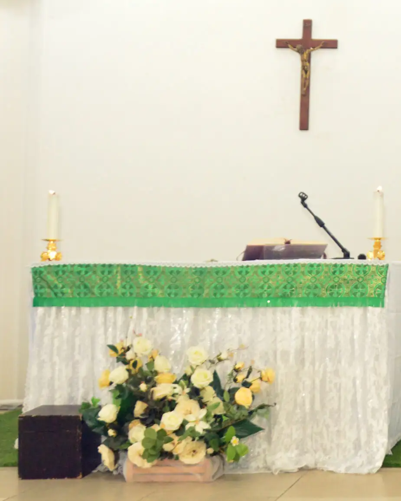
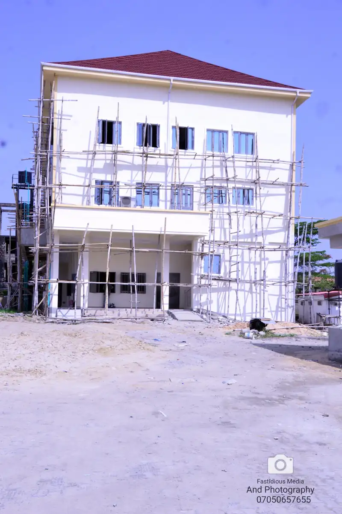
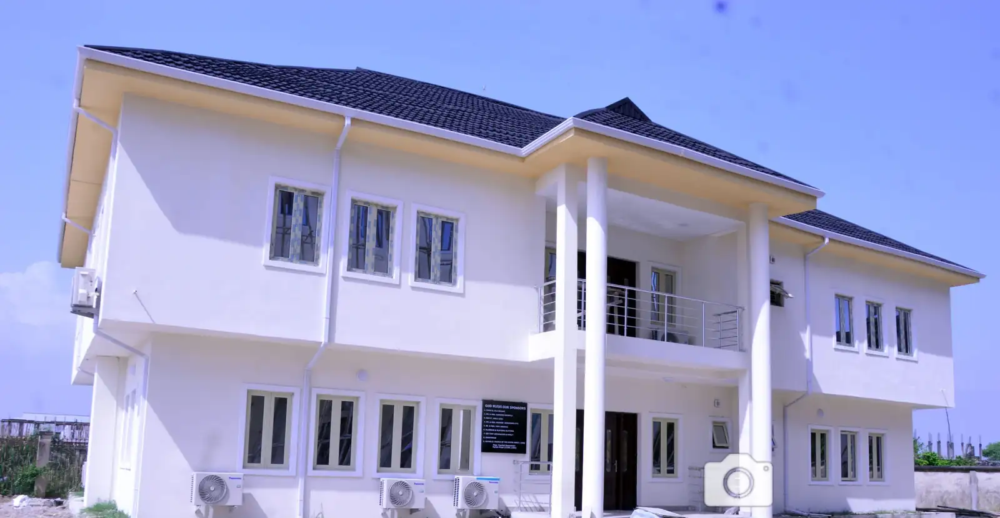
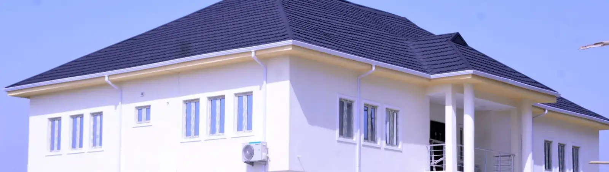
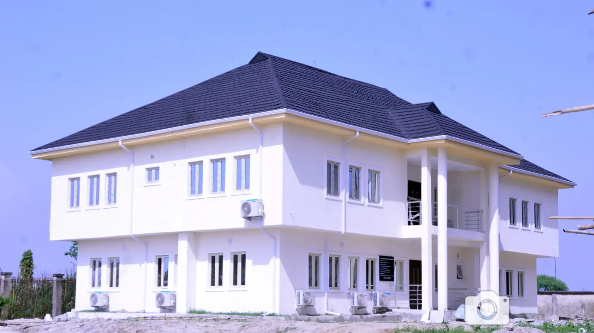

Catholic Church of the Lord’s Baptism
The parish week
Mass, confession and the priest’s office, Sunday to Saturday. All times are Lagos time.
SundayToday
8:00 AMPreparation
8:30 AMHoly Mass
11:00 AMRCIA catechism
MondayToday
6:30 AMMass
TuesdayToday
9 AM to 2 PMPriest’s office open
WednesdayToday
6:30 AMMass
9 AM to 2 PMPriest’s office open
ThursdayToday
No Mass listed
FridayToday
6:30 AMMass
9 AM to 2 PMPriest’s office open
SaturdayToday
8:00 AMMass
8:45 AMConfession
9:00 AMChildren’s catechism

Public holidays: Mass at 8:00 AM.
Three ways in
- GiveOffertory, tithe, projects, harvest and societiesEvery parish account in one place, with one tap to copy the number.
- HarvestHarvest of God’s Faithfulness, 2026Make your Commitment Sunday pledge and see this year’s theme.
- JoinRegister your householdAdd your family to the parish register so we can welcome and serve you.
Through the month
Sacraments, devotions and meetings that come round once or twice a month.
- Infant baptism
- First Saturday, at the 8:00 AM Mass
- Pre-baptism instructions
- Parents and godparents. Last Saturday, 9:00 AM
- Communion to the sick and aged
- First Friday, from 9:00 AM
- Eucharistic adoration
- Last Friday, 6:30 PM
- Small Christian Communities
- First and third Sundays, 5:00 to 6:00 PM
- Organisations meeting
- Second Sunday, 10:30 AM
From the parish
Photos and recordings from parish life, posted by the parish office.
The altar dressed in white lace for a feast, with white roses, chrysanthemums and one red rose. 
The parish building going up, with the scaffolding still on.Photo: the parish photographer (watermark kept) 
Sunday Mass homily, 22 February 2026.Video: CCLB Lekki on YouTube 
The finished parish building, two storeys with a slate-blue roof. 
The parish building from the road, seen across the open plot. The sanctuary in green for Ordinary Time: the crucifix above the altar, cream roses in front. The altar dressed in white lace for a feast, with white roses, chrysanthemums and one red rose. The parish building going up, with the scaffolding still on.Photo: the parish photographer (watermark kept) Sunday Mass homily, 22 February 2026.Video: CCLB Lekki on YouTube The finished parish building, two storeys with a slate-blue roof. The parish building from the road, seen across the open plot. The sanctuary in green for Ordinary Time: the crucifix above the altar, cream roses in front.
Phone
+234 913 222 2286Priest’s office
Tuesday, Wednesday and Friday, 9:00 AM to 2:00 PM
